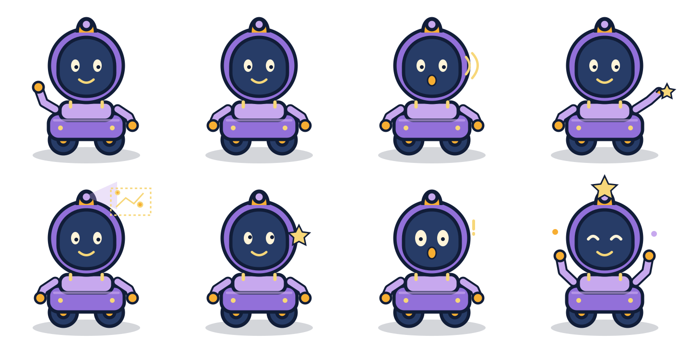

Spirit
MER-A · roverIdleSpeakingDiscoveryCelebration
Fictional voice: Persistent and curious; invites another look.
Hardware check: Six wheels, solar deck, twin-camera mast, articulated instrument arm. Same MER body as Opportunity.
This development-only showcase is a visual review aid, not a player screen. Each machine keeps its real silhouette; the personality and face marks are fictional. The game route table, mission data, progress, language, rewards, and audio are not changed by this page.
Mission references: NASA and NSSDCA links are listed in the source register and the character bible.
Fictional voice: Persistent and curious; invites another look.
Hardware check: Six wheels, solar deck, twin-camera mast, articulated instrument arm. Same MER body as Opportunity.
Fictional voice: Optimistic and observant; asks the player to compare clues.
Hardware check: Shares Spirit’s six-wheel MER chassis, solar deck, mast cameras, and instrument arm. Color and expression differences are fictional.
Fictional voice: Independent and curious; encourages one careful step at a time.
Hardware check: Compact rectangular chassis, six cleated wheels, solar deck, cameras, and an extendable APXS mechanism.
Fictional voice: Playful and imaginative; invites a new point of view.
Hardware check: Four blades in two coaxial counter-rotors, solar panel above, compact body, four landing legs, cameras. No wheels.
Fictional voice: Patient and methodical; asks the player to observe and compare.
Hardware check: Triangular frame, three footpad legs, mast equipment, TV camera, and extendable soil sampler.
Fictional voice: Sociable and adventurous; helps plan a route.
Hardware check: Open frame, four wire-mesh wheels, two empty seats, T-handle console, front dish antenna, and equipment trays.

Fictional voice: Friendly, curious, and enthusiastic. Spark helps the player navigate and think about clues, but is never presented as a scientific source.
Identity check: Preserve the existing small wheeled body, purple/lavender palette, expressive eyes, integrated holographic projector, and all eight approved vector poses.